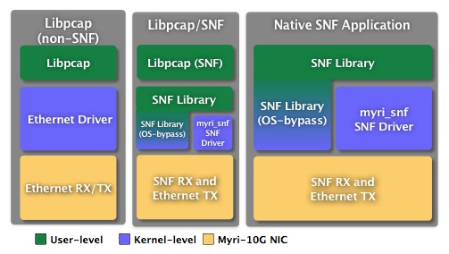

Sniffer10G
1.1.0b3
The Myricom Sniffer10G software uses Myri-10G programmable Network Interface Cards (NICs), a firmware extension, and a user-level library to enable sustained capture and replay of 10-Gigabit Ethernet traffic. Small-packet coalescing and an efficient zero-copy path to host memory allow Sniffer10G to capture streams at line rate for all Ethernet packet sizes. Sniffer10G can also enable multiple independent processes or threads to concurrently analyze the incoming traffic from one or more NIC ports and if required, reinject the packet on the current or another NIC port.
The Sniffer10G software distribution is controlled by a dual-mode driver that operates in Ethernet mode as a regular 10G Ethernet driver until the device is enabled for capture mode. Capture mode is enabled through the SNF library which instructs the firmware to deposit incoming packets in a receive ring directly accessible to the user library instead of the default kernel path. For packet injection, the SNF library can also directly communicate with the NIC without going through the kernel, although this capability can operate simultaneously with the Ethernet driver's send capability.
Sniffer10G's packet capture capabilities can be leveraged through the popular Libpcap library or directly through the SNF API, available as a set of C programming language functions. Using an SNF-aware Libpcap, users reference a Myri-10G NIC through its Ethernet interface name and can run existing Libpcap-dependent applications and continue to rely on Libpcap's portable interface. For more advanced usage, the SNF API can be targeted directly. In both cases, going through the SNF interface instead of the kernel ensures a tighter level of integration with the Myri-10G NIC by leveraging user-level receive mechanisms.

Sniffer10G Application Layers
- No system calls are required to retrieve packets from a kernel-level queue, and users have zero-copy access to incoming packets;
- There is no need to funnel all incoming packets through a single Libpcap-like device as would be the case in kernel-based methods, even if RSS rings are allocated in the kernel.
By default, when Sniffer10G is configured for multiple rings, the immediate goal is to partition the incoming traffic for multiple consumers. Much like RSS, a deterministic hash function is applied to each packet such that packets contained in the same TCP/UDP flow are always handled by the same consumer. For example, assuming a balanced traffic mix involving mostly TCP and UDP flows, 8 consumers should see 1/8-th of the packet rate and 1/8-th of the incoming bandwidth.
While multiple rings are primarily designed to partition the incoming traffic across multiple capture consuming rings, it is also possible to duplicate every incoming packet to effectively create N identical capture sessions. The duplication is handled by the Sniffer10G software on the host where there is more memory bandwidth than the I/O bus. PCIe bus. Packet duplication can be enabled by through the SNF_F_RX_DUPLICATE flag.
The multi-ring feature can be configured either explicitly in snf_open or implicitly by changing module parameters when the driver is started.
If the driver parameters are changed upon driver load, any explicit request in snf_open for number of rings and flags is ignored. This configuration should suite users and administrators that want to configure each port as N virtual capture device. In this mode, simple applications (and pcap-based applications) will open a Myricom device as if it was virtualized. Each ring will see a portion of the incoming traffic with partitioning or a copy of every packet with duplication. The module parameters are the following:
- myri_snf_rings=N: Given N where N is non-zero, each snf_open() will automatically expect that N rings are to be used. By default, the driver loads up with N=0 and retains the previous behavior of allowing the first caller to snf_open() to dictate how many rings are to be allocated.
Explicit configuration can be requested by requesting a given amount of rings and setting specific flags in snf_open. However, if snf_open is used in multiple processes, the first opener will dictate both the number of rings and the flags that determine the capture mode. In an explicit configuration, multiple rings should either come from a single process or care must be taken such that each process calls snf_open with the same parameters.
Whereas most Internet traffic is usually bimodal in the distribution of packet sizes, Sniffer10G has been designed to support a worst case scenario where all packets are at the minimum 10-Gigabit Ethernet packet size, 64 bytes. When including the 7-byte preamble, the start byte, and the 12-byte inter-packet gap, a minimum-size packets of 64 bytes requires 84 byte times on the wire. Under a constant stream of minimum packet sizes, a packet arrives at every 67.2 nanoseconds corresponding to maximum packet rate of 14.88 Mpps.
On our reference platform, a Xeon X5570 at 2.93GHz, running Sniffer in a single ring configuration demonstrates a library overhead of about 32 nanoseconds per packet on average for 64-byte packets. Minimizing library overhead is necessary to achieve high packet rate capture.
The primary goal of using multiple rings is to leverage multiple cores in the packet analysis by effectively reducing the amount of packets each ring has to process. Assuming that the incoming traffic can be fairly well balanced across (say) 8 cores, each core is reponsible for processing one eighth of a potential peak 14.88 Mpps, for a worst case of a packet every 537.6 nanoseconds. With the aforementioned library overhead, this leaves roughly 500 nanoseconds of analysis per core under a worst case scenario.
Users can ensure that the correct Libpcap is linked to the application by setting SNF_DEBUG_MASK=3 in the environment to cause the SNF API to dump out information when the Sniffer10G device is opened by Libpcap.
While Libpcap is not thread-safe, it is possible to run multiple processes that use Libpcap/SNF in parallel. Under this configuration, if multiple Libpcap processes all wish to process incoming data from a single device, they simply need to agree on the total number of rings by exporting the number of desired rings in the environment.

Multi-Process Snort over Libpcap/SNF
# Simplistic example: start 8 parallel instances of snort each bound
# to different cores, all using the same configuration file which
# presumably lists myri0 as an interface. This configuration is explicit.
export SNF_NUM_RINGS=8
# If incoming data is to be duplicated to multiple snort instances, we
# set the SNF_F_RX_DUPLICATE=0x300 and SNF_F_PSHARED=0x1 flags
# export SNF_FLAGS=0x301
# If incoming data is to be partitioned across rings via RSS, an alternative
# receive mode is to set the SNF_F_RX_PRIVATE=0x100 flag which reduces the
# amount of shared SNF references at the cost of an additional copy. This
# approach may provide better capture behavior when the RSS distribution is
# unbalanced or more generally, when the consumption rate of each process
# varies enough to cause large amounts of packet drops. Here we set the
# SNF_F_RX_PRIVATE=0x100 flag with SNF_F_PSHARED=0x1 flag to allow
# process-sharing.
# export SNF_FLAGS=0x101
i=0;
while [ $i -lt $SNF_NUM_RINGS ]; do
taskset -c $i /opt/snort/snort -c /opt/snort/snort.conf &
sleep 2 # Ensure snort creates different logfile for each snort
i=$((i+1))
done
Starting with Sniffer 1.1, multi ring configuration can be implicitly handled by setting the number of rings and the flags as module parameters (either in /etc/modprobe.conf on Linux, or as paramaeters to the myri_start_stop script when starting the module).
All documentation is contained in HTML form under the share/doc directory of the installed package distribution.
Tests are available from bin/tests of the install directory in binary form and in share/doc/examples in source form. These tests mostly show different aspects of the SNF API and how to use its features.
snf_simple_recv.c: Simplest example of how to receive packets
snf_multi_recv.c: How to receive packets with multiple rings
snf_inline.c: Example of how to use SNF to create an inline capture, analyze and replay device (essentially a router).
snf_pktgen.c: How to generate packets for injection
snf_replay.c: Example that uses SNF-level injection to replay a .pcap capture file.
snf_basic_diags: Basic internal diags, can be useful to verify that everything works as expected (source code not available).
sbin/myri_bug_report: Useful to generate a bug report for help@myri.com
bin/myri_counters: Generates output for low-level NIC counters (SNF for Sniffer-related counters and Ethernet for driver-related counters).
bin/myri_bandwidth: Shows the instantaneous bandwidth of data going through a given board, which is mostly useful when displayed at an interval (-i option).
bin/myri_endpoint_info: Shows which processes consume some NIC-level resources known as endpoints, which can be useful to know process IDs are using Sniffer.
bin/myri_intr_coal: Tool to change interrupt coalescing for receives (equivalent to the ethtool -G rx-usecs option on Linux).

5 November 2010 Sniffer10G 1.1.0b3